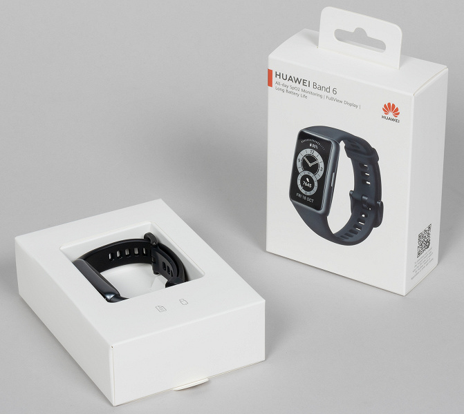
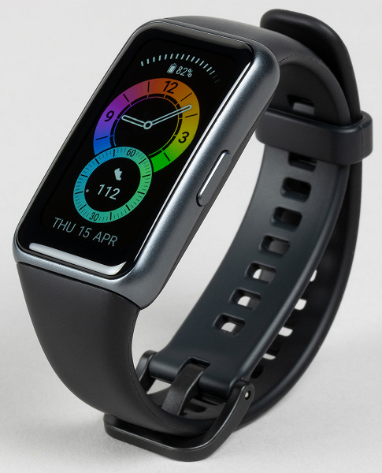

В отличие от Band 4 Pro, здесь нет GPS, и это позволяет предположить, что версия со встроенным модулем навигации еще появится. Но главное, что емкость батареи увеличена почти вдвое, а диагональ экрана возросла более чем в полтора раза. Как это сказалось на пользовательских качествах? Давайте разберемся.
Браслет приехал к нам в нейтральной коробке преимущественно белого цвета с изображением самого устройства на фронтальной поверхности.Внутри — сам браслет, краткое руководство пользователя, гарантийный талон и зарядный кабель.
Заметим, что кабель этот коротковат — 60 см. Не совсем понятно, на чем таким образом пытается сэкономить производитель — на самом шнуре или же на пространстве в коробке, но бокс-то не сказать, чтобы очень компактный. И еще одно замечание: в инструкции на русском языке только одна страничка, и содержание ее практически бесполезно для обычного пользователя. Основную часть там занимают предупреждения, чего нельзя делать с браслетом.
Внешний вид браслета мы тоже можем охарактеризовать как нейтральный, но все-таки не без претензий на стиль. Пластиковый корпус покрыт темно-серой краской с металлическим отливом, и это создает ощущение, что устройство вовсе не из пластика, а из более благородного материала.
Черный ремешок — силиконовый и отсоединяемый от корпуса. Но, как и прежде, проблема в том, что, во-первых, отсоединяется он очень туго, а во-вторых, поскольку крепление проприетарное, купить универсальные ремешки сторонних производителей и использовать их с Band 6 невозможно.
Как уже отмечалось, главная особенность браслета — достаточно крупный, по меркам данного форм-фактора, AMOLED-экран с диагональю 1,47″ и разрешением 194×368. Поэтому мы уделили его тестированию особое внимание. Ниже — заключение Алексея Кудрявцева.
Лицевая поверхность экрана выполнена в виде стеклянной пластины с зеркально-гладкой поверхностью, устойчивой к появлению царапин. На внешней поверхности экрана есть специальное олеофобное (жироотталкивающее) покрытие (эффективное, заметно лучше, чем у Google Nexus 7 (2013)), поэтому следы от пальцев удаляются существенно легче, а появляются с меньшей скоростью, чем в случае обычного стекла. Судя по отражению объектов, антибликовые свойства экрана не хуже, чем у экрана Google Nexus 7 2013.